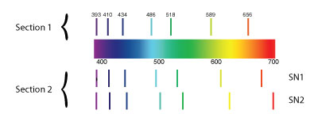
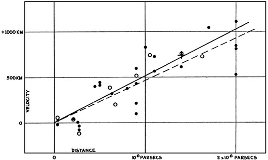

The Culture of Science
The Nature of Scientific Knowledge
- An important component of the scientific process is that the findings of science are
- We could be certain that the Earth was round only after pictures of the planet were taken from space in 1968.
- How did the Second Law of Thermodynamics contribute to our understanding of the age of the universe?
- Study the line spectra in Section 1 of the image. This spectrum represents the normal emission lines for elements traditionally found in stars (H, He, Ca, Na, etc.). The two sets of line spectra in Section 2 represent the observed spectra for stars SN1 and SN2. What can be said about the movement of these stars based on these spectra? 
- Edwin Hubble created the figure below from a combination of his and Vesto Slipher's research data. What does the data in the figure show? 
- Einstein incorrectly believed that the universe was static because his theory of relativity predicted a static universe.
- Which of the following statements BEST describes the process by which we have come to understand the age of the universe?
(A)__absolute.
(B)__testable.
(C)__true.
(D)__uncertain.
(A)__true
(B)__false
(A)__It suggested that the universe must be finite in age.
(B)__It suggested that the universe is infinitely old.
(C)__It suggested that the universe must be finite in size.
(D)__It suggested that the universe is contracting.
(A)__Both stars are moving toward the observer; however, SN2 is moving faster.
(B)__Both stars are moving toward the observer; however, SN2 is moving slower.
(C)__Both stars are moving away from the observer; however, SN2 is moving faster.
(D)__Both stars are moving away from the observer; however, SN2 is moving slower.
(A)__The stars are receding from one another.
(B)__The universe is expanding.
(C)__The velocity of a star is directly proportional to its distance.
(B)__Star brightness is a function of velocity.
(A)__True
(B)__False
(A)__Scientists have worked independently to test and answer unique questions using only their own data.
(B)__Scientists have identified a single way to measure the age of the universe.
(C)__The age of the universe cannot be known through scientific means.
(D)__Over time, newer studies have built upon, revised, and improved our understanding of the age of the universe.